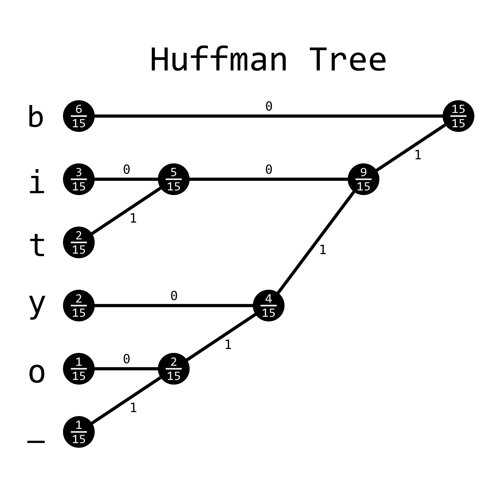

Huffman Encoding
If there were ever a data compression method to take the world by storm, it would be Huffman encoding. In fact, this was the method that got me into computational methods to begin with. I distinctly remember sitting in my data compression class and talking about the great information theorist Claude Shannon and Robert Fano, when suddenly my professor introduced a new kid to the mix: David Huffman. He managed to rip the heart out of the methods described by leaders of the field and create a data compression method that was easier to understand and implement, while also providing more robust results, and apparently this was all done for a school project!
It was in that moment, I knew I would never amount to anything. I have since accepted that fact and moved on.
Huffman encoding follows from the problem described in the Data Compression section. We have a string that we want to encode into bits. Huffman encoding ensures that our encoded bitstring is as small as possible without losing any information. Because it is both lossless and guarantees the smallest possible bit length, it outright replaces both Shannon and Shannon-Fano encoding in most cases, which is a little weird because the method was devised while Huffman was taking a course from Fano, himself!
The idea is somewhat straightforward in principle, but a little difficult to code in practice. By creating a binary tree of the input alphabet, every branch can be provided a unique bit representation simply by assigning a binary value to each child and reading to a character in a leaf node if starting from the root node.
So now the question is: how do we create a binary tree? Well, here we build it from the bottom up like so:
- Order all characters according to the frequency they appear in the input bitstring, with the most frequent character at the top of the list. Be sure to keep track of the frequencies, too!
- Add the smallest two values together to create a new node with a new frequency.
- Keep doing step 2 until the tree is complete.
- Read the tree backwards from the root node and concatenate the final bitstring codeword. Keep all codewords and put them into your final set of codewords (sometimes called a codebook)
- Encode your phrase with the codebook.
And that's it.
Here's an image of what this might look like for the phrase bibbity_bobbity:

This will create a codebook that looks like this:
| Character | Bit Representation |
|---|---|
| b | 0 |
| i | 100 |
| t | 101 |
| y | 110 |
| o | 1110 |
| _ | 1111 |
and bibbity_bobbity becomes 01000010010111011110111000100101110.
As mentioned this uses the minimum number of bits possible for encoding.
The fact that this algorithm is both conceptually simple and provably useful is rather extraordinary to me and is why Huffman encoding will always hold a special place in my heart.
Example Code
In code, this can be a little tricky. It requires a method to continually sort the nodes as you add more and more nodes to the system. The most straightforward way to do this in some languages is with a priority queue, but depending on the language, this might be more or less appropriate. In addition, to read the tree backwards, some sort of Depth First Search needs to be implemented. Whether you use a stack or straight-up recursion also depends on the language, but the recursive method is a little easier to understand in most cases.
# This is for the PriorityQueue
using DataStructures
struct Leaf
weight::Int64
key::Char
end
struct Branch
right::Union{Leaf, Branch}
left::Union{Leaf, Branch}
weight::Int64
end
const Node = Union{Leaf, Branch}
isbranch(branch::Branch) = true
isbranch(other::T) where {T} = false
function codebook_recurse(leaf::Leaf, code::String,
dict::Dict{Char,String})
dict[leaf.key] = code
end
function codebook_recurse(branch::Branch, code::String,
dict::Dict{Char,String})
codebook_recurse(branch.left, string(code, "1"), dict)
codebook_recurse(branch.right, string(code, "0"), dict)
end
# This will depth-first search through the tree
# to create bitstrings for each character.
# Note: Any depth-first search method will work
# This outputs encoding Dict to be used for encoding
function create_codebook(n::Node)
codebook = Dict{Char,String}()
codebook_recurse(n, "", codebook)
return codebook
end
# This outputs huffman tree to generate dictionary for encoding
function create_tree(phrase::String)
# creating weights
weights = PriorityQueue()
for i in phrase
temp_string = string(i)
if (haskey(weights, temp_string))
weights[temp_string] += 1
else
weights[temp_string] = 1
end
end
# Creating all nodes to iterate through
nodes = PriorityQueue{Node, Int64}()
while(length(weights) > 0)
weight = peek(weights)[2]
key = dequeue!(weights)[1]
temp_node = Leaf(weight, key)
enqueue!(nodes, temp_node, weight)
end
while(length(nodes) > 1)
node1 = dequeue!(nodes)
node2 = dequeue!(nodes)
temp_node = Branch(node1, node2, node1.weight + node2.weight)
enqueue!(nodes, temp_node, temp_node.weight)
end
huffman_tree = dequeue!(nodes)
return huffman_tree
end
function encode(codebook::Dict{Char, String}, phrase::String)
final_bitstring = ""
for i in phrase
final_bitstring = final_bitstring * codebook[i]
end
return final_bitstring
end
function decode(huffman_tree::Node, bitstring::String)
current = huffman_tree
final_string = ""
for i in bitstring
if (i == '1')
current = current.left
else
current = current.right
end
if (!isbranch(current))
final_string = final_string * string(current.key)
current = huffman_tree
end
end
return final_string
end
function two_pass_huffman(phrase::String)
huffman_tree = create_tree(phrase)
codebook = create_codebook(huffman_tree)
println(codebook)
bitstring = encode(codebook, phrase)
final_string = decode(huffman_tree, bitstring)
println(bitstring)
println(final_string)
end
two_pass_huffman("bibbity bobbity")
extern crate itertools;
use std::cmp::{Ord, Ordering, PartialOrd};
use std::collections::{BinaryHeap, HashMap};
use itertools::Itertools;
#[derive(Debug)]
enum HuffmanTree {
Branch {
count: i32,
left: Box<HuffmanTree>,
right: Box<HuffmanTree>,
},
Leaf {
count: i32,
value: char,
},
}
impl PartialEq for HuffmanTree {
fn eq(&self, other: &Self) -> bool {
self.count() == other.count()
}
}
impl Eq for HuffmanTree {}
impl PartialOrd for HuffmanTree {
fn partial_cmp(&self, other: &Self) -> Option<Ordering> {
other.count().partial_cmp(&self.count())
}
}
impl Ord for HuffmanTree {
fn cmp(&self, other: &Self) -> Ordering {
other.count().cmp(&self.count())
}
}
#[derive(Debug)]
struct Codebook {
codebook: HashMap<char, String>,
tree: HuffmanTree,
}
impl HuffmanTree {
pub fn from(input: &str) -> Self {
let counts = input.chars().fold(HashMap::new(), |mut map, c| {
*map.entry(c).or_insert(0) += 1;
map
});
let mut queue = counts
.iter()
.map(|(&value, &count)| HuffmanTree::Leaf { value, count })
.collect::<BinaryHeap<HuffmanTree>>();
while queue.len() > 1 {
let left = queue.pop().unwrap();
let right = queue.pop().unwrap();
queue.push(HuffmanTree::Branch {
count: left.count() + right.count(),
left: Box::new(left),
right: Box::new(right),
})
}
queue.pop().expect("The Huffman tree has to have a root")
}
pub fn count(&self) -> i32 {
match *self {
HuffmanTree::Branch { count, .. } => count,
HuffmanTree::Leaf { count, .. } => count,
}
}
pub fn make_codebook(self) -> Codebook {
let mut codebook = HashMap::new();
self.dfs(String::from(""), &mut codebook);
Codebook {
codebook,
tree: self,
}
}
pub fn decode(&self, input: &str) -> String {
let mut result = String::from("");
let mut start = 0;
while !input[start..].is_empty() {
start += self.decode_dfs(&input[start..], &mut result);
}
result
}
fn decode_dfs(&self, input: &str, result: &mut String) -> usize {
let current = input.chars().next();
match *self {
HuffmanTree::Branch { ref left, .. } if current == Some('0') => {
1 + left.decode_dfs(&input[1..], result)
}
HuffmanTree::Branch { ref right, .. } if current == Some('1') => {
1 + right.decode_dfs(&input[1..], result)
}
HuffmanTree::Leaf { value, .. } => {
result.push(value);
0
}
_ => panic!("Unexpected end of input"),
}
}
fn dfs(&self, code: String, codebook: &mut HashMap<char, String>) {
match *self {
HuffmanTree::Branch {
ref left,
ref right,
..
} => {
left.dfs(code.clone() + "0", codebook);
right.dfs(code.clone() + "1", codebook);
}
HuffmanTree::Leaf { value, .. } => {
codebook.insert(value, code);
}
}
}
}
impl Codebook {
fn encode(&self, input: &str) -> String {
input.chars().map(|c| &self.codebook[&c]).join("")
}
fn decode(&self, input: &str) -> String {
self.tree.decode(input)
}
}
fn main() {
let input = "bibbity bobbity";
let tree = HuffmanTree::from(input);
let codebook = tree.make_codebook();
let encoded = codebook.encode(input);
let decoded = codebook.decode(&encoded);
// Uncomment this line if you want to see the codebook/tree
// println!("{:#?}", codebook);
println!("{}", encoded);
println!("{}", decoded);
}
// Made by Guston and edited by Gathros
#include <stdio.h>
#include <stdlib.h>
#include <string.h>
#include <stdbool.h>
struct tree {
struct tree* left;
struct tree* right;
int count;
char value;
};
struct bitstring_builder {
char str[257];
int next_index;
};
struct codebook {
char* codes[256];
};
struct heap {
struct tree** data;
int length;
int capacity;
};
bool is_leaf(const struct tree* t) {
return !t->left && !t->right;
}
void swap(struct tree** lhs, struct tree** rhs) {
struct tree* tmp = *lhs;
*lhs = *rhs;
*rhs = tmp;
}
/* The two concat functions are horribly inefficient */
void concat(char** dst, const char* src) {
int dst_len = strlen(*dst);
int src_len = strlen(src);
*dst = realloc(*dst, src_len + dst_len + 1);
strcat(*dst, src);
}
void concat_char(char** dst, char c) {
int len = strlen(*dst);
*dst = realloc(*dst, len + 2);
(*dst)[len] = c;
(*dst)[len + 1] = '\0';
}
char* duplicate(const char* src) {
int length = strlen(src);
char* dst = malloc(length + 1);
memcpy(dst, src, length + 1);
return dst;
}
void heap_push(struct heap* heap, struct tree* value) {
if (heap->capacity == heap->length) {
heap->capacity = heap->capacity == 0 ? 4 : heap->capacity * 2;
heap->data = realloc(heap->data, heap->capacity * sizeof(struct tree*));
}
heap->data[heap->length++] = value;
int index = heap->length - 1;
while (index) {
int parent_index = (index - 1) / 2;
if (heap->data[parent_index]->count <= heap->data[index]->count) {
break;
}
swap(&heap->data[parent_index], &heap->data[index]);
index = parent_index;
}
}
struct tree* heap_pop(struct heap* heap) {
if (!heap->length) {
return NULL;
}
struct tree* result = heap->data[0];
swap(&heap->data[0], &heap->data[--heap->length]);
int index = 0;
for (;;) {
int target = index;
int left = 2 * index + 1;
int right = left + 1;
if (left < heap->length &&
heap->data[left]->count < heap->data[target]->count) {
target = left;
}
if (right < heap->length &&
heap->data[right]->count < heap->data[target]->count) {
target = right;
}
if (target == index) {
break;
}
swap(&heap->data[index], &heap->data[target]);
index = target;
}
return result;
}
void heap_free(struct heap* heap) {
free(heap->data);
}
struct tree* generate_tree(const char* str) {
int counts[256] = { 0 };
for (; *str != '\0'; ++str) {
counts[(unsigned char)*str] += 1;
}
struct heap heap = { 0 };
for (int i = 0; i < sizeof(counts) / sizeof(int); ++i) {
if (counts[i]) {
struct tree* tree = calloc(1, sizeof(struct tree));
tree->value = (char)i;
tree->count = counts[i];
heap_push(&heap, tree);
}
}
while (heap.length > 1) {
struct tree* left = heap_pop(&heap);
struct tree* right = heap_pop(&heap);
struct tree* branch = calloc(1, sizeof(struct tree));
branch->count = left->count + right->count;
branch->left = left;
branch->right = right;
heap_push(&heap, branch);
}
struct tree* root = heap_pop(&heap);
heap_free(&heap);
return root;
}
void tree_free(struct tree* tree) {
if (!tree) return;
tree_free(tree->left);
tree_free(tree->right);
free(tree);
}
void codebook_recurse(const struct tree* tree,
struct bitstring_builder* builder,
struct codebook* codebook) {
if (!tree) {
return;
}
if (is_leaf(tree)) {
builder->str[builder->next_index] = '\0';
codebook->codes[(unsigned char)tree->value] = duplicate(builder->str);
return;
}
builder->str[builder->next_index++] = '0';
codebook_recurse(tree->left, builder, codebook);
builder->next_index -= 1;
builder->str[builder->next_index++] = '1';
codebook_recurse(tree->right, builder, codebook);
builder->next_index -= 1;
}
struct codebook generate_codebook(const struct tree* tree) {
struct codebook codebook = { .codes = { 0 } };
struct bitstring_builder builder = { .str = { 0 }, .next_index = 0 };
codebook_recurse(tree, &builder, &codebook);
return codebook;
}
void codebook_free(struct codebook* codebook) {
int size = sizeof(codebook->codes) / sizeof(codebook->codes[0]);
for (int i = 0; i < size; ++i) {
free(codebook->codes[i]);
}
}
const char* get_code(const struct codebook* codebook, char c) {
return codebook->codes[(unsigned char)c];
}
char* encode(const char* input, struct tree** huffman_tree,
struct codebook* codebook) {
*huffman_tree = generate_tree(input);
*codebook = generate_codebook(*huffman_tree);
char* result = duplicate(get_code(codebook, *input));
int result_length = strlen(result);
int result_capacity = result_length;
input += 1;
for (; *input; ++input) {
concat(&result, get_code(codebook, *input));
}
return result;
}
const char* decode_recurse(const char* input, const struct tree* tree,
char** result) {
if (!tree) {
return input;
}
if (is_leaf(tree)) {
concat_char(result, tree->value);
return input;
}
if (*input == '0') {
return decode_recurse(input + 1, tree->left, result);
} else {
return decode_recurse(input + 1, tree->right, result);
}
}
char* decode(const char* input, const struct tree* tree) {
char* result = calloc(1, 1);
do {
input = decode_recurse(input, tree, &result);
} while (*input);
return result;
}
int main() {
struct tree* tree;
struct codebook codebook;
char* encoded = encode("bibbity bobbity", &tree, &codebook);
char* decoded = decode(encoded, tree);
printf("Codebook:\n");
for (int i = 0; i < 256; ++i) {
if (codebook.codes[i]) {
printf("%c %s\n", (char)i, codebook.codes[i]);
}
}
printf("%s\n", encoded);
printf("%s\n", decoded);
tree_free(tree);
codebook_free(&codebook);
free(encoded);
free(decoded);
return 0;
}
import qualified Data.Map as M
import Data.List (insert, sort)
data Tree a = Leaf Int a
| Node Int (Tree a) (Tree a)
deriving (Show, Eq)
freq :: Tree a -> Int
freq (Leaf i _) = i
freq (Node i _ _) = i
instance (Eq a) => Ord (Tree a) where
compare t1 t2 = compare (freq t1) (freq t2)
getFrequencies :: Ord a => [a] -> [(Int, a)]
getFrequencies = toSortedList . M.fromListWith (+) . flip zip (repeat 1)
where toSortedList = sort . map swap . M.toList
swap (a, i) = (i, a)
buildTree :: (Ord a) => [a] -> Maybe (Tree a)
buildTree = build . map (uncurry Leaf) . getFrequencies
where build [] = Nothing
build [t] = Just t
build (t1:t2:ts) = build $ insert (Node (freq t1 + freq t2) t1 t2) ts
data Bit = Zero | One
instance Show Bit where
show Zero = "0"
show One = "1"
encode :: (Ord a) => [a] -> (Maybe (Tree a), [Bit])
encode s = (tree, msg)
where
tree = buildTree s
msg = concatMap (table M.!) s
table = case tree of
Nothing -> M.empty
Just t -> M.fromList $ mkTable (t, [])
mkTable (Leaf _ a, p) = [(a, reverse p)]
mkTable (Node _ t1 t2, p) = concatMap mkTable [(t1, Zero:p), (t2, One:p)]
decode :: (Ord a) => Maybe (Tree a) -> [Bit] -> [a]
decode Nothing _ = []
decode (Just t) m = path t m
where path (Leaf _ a) m = a : path t m
path (Node _ t1 _) (Zero: m) = path t1 m
path (Node _ _ t2) (One: m) = path t2 m
path _ _ = []
main = do
let msg = "bibbity bobbity"
(tree, encoded) = encode msg
decoded = decode tree encoded
putStrLn $ "Endoding \"" ++ msg ++ "\": " ++ concatMap show encoded
putStrLn $ "Length: " ++ (show $ length encoded)
putStrLn $ "Decoding: " ++ decoded
HuffmanCoding.cs
// submitted by Julian Schacher (jspp), thanks to gustorn for the help
using System;
using System.Collections.Generic;
using System.Linq;
namespace HuffmanCoding
{
public class EncodingResult
{
public string BitString { get; set; }
public Dictionary<char, string> Dictionary { get; set; }
public HuffmanCoding.Node Tree { get; set; }
public EncodingResult(string bitString, Dictionary<char, string> dictionary, HuffmanCoding.Node tree)
{
this.BitString = bitString;
this.Dictionary = dictionary;
this.Tree = tree;
}
}
public class HuffmanCoding
{
// The Node class used for the Huffman Tree.
public class Node : IComparable<Node>
{
public Node LeftChild { get; set; }
public Node RightChild { get; set; }
public string BitString { get; set; } = "";
public int Weight { get; set; }
public string Key { get; set; }
public bool IsLeaf => LeftChild == null && RightChild == null;
// Creates a leaf. So just a node is created with the given values.
public static Node CreateLeaf(char key, int weight) => new Node(key.ToString(), weight, null, null);
// Creates a branch. Here a node is created by adding the keys and weights of both childs together.
public static Node CreateBranch(Node leftChild, Node rightChild) => new Node(leftChild.Key + rightChild.Key, leftChild.Weight + rightChild.Weight, leftChild, rightChild);
private Node(string key, int weight, Node leftChild, Node rightChild)
{
this.Key = key;
this.Weight = weight;
this.LeftChild = leftChild;
this.RightChild = rightChild;
}
public int CompareTo(Node other) => this.Weight - other.Weight;
}
// Node with biggest value at the top.
class NodePriorityList
{
public int Count => nodes.Count;
private List<Node> nodes = new List<Node>();
public NodePriorityList() { }
public NodePriorityList(List<Node> givenNodes)
{
this.nodes = givenNodes.ToList();
this.nodes.Sort();
}
public void Add(Node newNode)
{
var index = this.nodes.BinarySearch(newNode);
if (index < 0)
this.nodes.Insert(~index, newNode);
else
this.nodes.Insert(index, newNode);
}
public Node Pop()
{
var result = this.nodes[0];
this.nodes.RemoveAt(0);
return result;
}
}
public EncodingResult Encode(string input)
{
var root = CreateTree(input);
var dictionary = CreateDictionary(root);
var bitString = CreateBitString(input, dictionary);
return new EncodingResult(bitString, dictionary, root);
}
public string Decode(EncodingResult result)
{
var output = "";
Node currentNode = result.Tree;
foreach (var bit in result.BitString)
{
// Go down the tree.
if (bit == '0')
currentNode = currentNode.LeftChild;
else
currentNode = currentNode.RightChild;
if (currentNode.IsLeaf)
{
output += currentNode.Key;
currentNode = result.Tree;
}
}
return output;
}
private Node CreateTree(string input)
{
// Create a List of all characters and their count in input by putting them into nodes.
var nodes = input
.GroupBy(c => c)
.Select(n => Node.CreateLeaf(n.Key, n.Count()))
.ToList();
// Convert list of nodes to a NodePriorityList.
var nodePriorityList = new NodePriorityList(nodes);
// Create Tree.
while (nodePriorityList.Count > 1)
{
// Pop the two nodes with the smallest weights from the nodePriorityList and create a parentNode with the CreateBranch method. (This method adds the keys and weights of the childs together.)
var leftChild = nodePriorityList.Pop();
var rightChild = nodePriorityList.Pop();
var parentNode = Node.CreateBranch(leftChild, rightChild);
nodePriorityList.Add(parentNode);
}
return nodePriorityList.Pop();
}
private Dictionary<char, string> CreateDictionary(Node root)
{
// We're using a string instead of a actual bits here, since it makes the code somewhat more readable and this is an educational example.
var dictionary = new Dictionary<char, string>();
CreateDictionary(root, "", dictionary);
return dictionary;
void CreateDictionary(Node node, string bitString, Dictionary<char, string> localDictionary)
{
if (node.IsLeaf)
localDictionary.Add(node.Key[0], bitString);
else
{
if (node.LeftChild != null)
CreateDictionary(node.LeftChild, bitString + '0', localDictionary);
if (node.RightChild != null)
CreateDictionary(node.RightChild, bitString + '1', localDictionary);
}
}
}
private string CreateBitString(string input, Dictionary<char, string> dictionary)
{
// We're using a string right here. While no compression is achieved with a string, it's the easiest way to display what the compressed result looks like. Also this is just an educational example.
var bitString = "";
foreach (var character in input)
bitString += dictionary[character];
return bitString;
}
}
}
Program.cs
// submitted by Julian Schacher (jspp), thanks to gustorn for the help
using System.Collections;
using System.Collections.Generic;
namespace HuffmanCoding
{
class Program
{
static void Main(string[] args)
{
var huffmanCoding = new HuffmanCoding();
var result = huffmanCoding.Encode("bibbity bobbity");
// The bitStrings are just strings and provide no compression. Look in HuffmanCoding.cs for explanation.
// Print dictionary.
foreach (var entry in result.Dictionary)
System.Console.WriteLine($"{entry.Key} {entry.Value}");
// Print BitString.
System.Console.WriteLine($"{result.BitString} count: {result.BitString.Length}");
var originalString = huffmanCoding.Decode(result);
System.Console.WriteLine(originalString);
}
}
}
#include <algorithm>
#include <array>
#include <bitset>
#include <cassert>
#include <cctype>
#include <cstddef>
#include <limits>
#include <memory>
#include <string>
#include <utility>
#include <vector>
#include <iostream>
using std::begin;
using std::end;
namespace huffman {
[[noreturn]] inline void unreachable() {
std::cerr << "this should never happen\n";
std::abort();
}
// --- interface ---
class codebook {
struct node {
int frequency;
node(int freq) : frequency(freq) {}
virtual ~node() = 0;
};
// never null
using node_ptr = std::unique_ptr<node const>;
using bitstring = std::vector<bool>;
// this is a flatmap between char and a bitstring
// there should only ever be one character with a given
// value at any time.
using encoder_t = std::vector<std::pair<char, bitstring>>;
struct leaf final : node {
char key;
leaf(int freq, char key) : node(freq), key(key) {}
};
struct branch final : node {
node_ptr lhs;
node_ptr rhs;
branch(node_ptr lhs, node_ptr rhs)
: node(lhs->frequency + rhs->frequency), lhs(std::move(lhs)),
rhs(std::move(rhs)) {}
};
// this allows us to share [codebook]s among encoded strings
struct data {
node_ptr decoder;
encoder_t encoder;
};
std::shared_ptr<data const> underlying_;
public:
template <typename Iter>
codebook(Iter const first, Iter const last);
template <typename Iter>
std::vector<bool> encode(Iter first, Iter last) const;
template <typename Iter>
std::string decode(Iter first, Iter last) const;
};
struct encoded_string {
codebook codes;
std::vector<bool> string;
explicit encoded_string(std::string const& s)
: codes(begin(s), end(s)), string(codes.encode(begin(s), end(s))) {}
encoded_string(codebook codes, std::string const& s)
: codes(codes), string(codes.encode(begin(s), end(s))) {}
std::string decoded() const {
return codes.decode(begin(string), end(string));
}
};
// --- implementation ---
inline codebook::node::~node() {}
inline std::vector<bool> with_new_bit(std::vector<bool> bits, bool b) {
bits.push_back(b);
return bits;
}
template <typename Iter>
codebook::codebook(Iter const first, Iter const last) {
struct helper {
static node_ptr make_decoder(Iter const first, Iter const last) {
// in this part of the function, we build up a frequency list
// sorted by frequency, descending
auto freq = std::vector<leaf>();
std::for_each(first, last, [&freq](char c) {
auto const it = std::find_if(
begin(freq), end(freq), [c](auto const& p) { return p.key == c; });
if (it != end(freq)) {
// it's already in the list
it->frequency += 1;
} else {
// it's not already in the list
freq.emplace_back(1, c);
}
});
if (freq.empty()) {
throw std::invalid_argument("attempted to codebook an empty range");
}
std::sort(begin(freq), end(freq), [](auto const& lhs, auto const& rhs) {
return lhs.frequency > rhs.frequency;
});
auto ret = std::vector<std::unique_ptr<node>>();
std::transform(
begin(freq), end(freq), std::back_inserter(ret), [](auto const l) {
return std::make_unique<leaf>(l);
});
while (ret.size() > 1) {
auto rhs = std::move(ret.back());
ret.pop_back();
auto lhs = std::move(ret.back());
ret.pop_back();
auto new_node =
std::make_unique<branch>(std::move(lhs), std::move(rhs));
auto const new_freq = new_node->frequency;
// look for the first element with a smaller frequency
auto const it =
std::find_if(begin(ret), end(ret), [new_freq](auto const& n) {
return n->frequency < new_freq;
});
// and insert the new_node before that element
ret.insert(it, std::move(new_node));
// in this way, we keep the list sorted by frequency
}
return std::move(ret.back());
}
static void
encoder_rec(node const* cur, std::vector<bool> bits, encoder_t& out) {
if (auto l = dynamic_cast<leaf const*>(cur)) {
out.push_back(std::make_pair(l->key, std::move(bits)));
} else if (auto b = dynamic_cast<branch const*>(cur)) {
encoder_rec(b->lhs.get(), with_new_bit(bits, 0), out);
encoder_rec(b->rhs.get(), with_new_bit(std::move(bits), 1), out);
} else {
unreachable();
}
}
static encoder_t make_encoder(node const& decoder) {
auto ret = encoder_t();
encoder_rec(&decoder, std::vector<bool>(), ret);
return ret;
}
};
auto decoder = helper::make_decoder(first, last);
auto encoder = helper::make_encoder(*decoder);
underlying_ = std::make_shared<data const>(
data{std::move(decoder), std::move(encoder)});
}
template <typename Iter>
std::vector<bool> codebook::encode(Iter const first, Iter const last) const {
std::vector<bool> ret;
auto& encoder = underlying_->encoder;
std::for_each(first, last, [&ret, &encoder](char c) {
auto const it =
std::find_if(begin(encoder), end(encoder), [c](auto const& p) {
return p.first == c;
});
if (it != end(encoder)) {
auto const& code = it->second;
std::copy(begin(code), end(code), std::back_inserter(ret));
} else {
throw std::invalid_argument(
"The range has a character which was not in the huffman set");
}
});
return ret;
}
template <typename Iter>
std::string codebook::decode(Iter const first, Iter const last) const {
std::string ret;
node const* const top = underlying_->decoder.get();
// returns a pair:
// the second member is the decoded character
// the first member is the place we've gotten to in the range
// i.e., if [0] is an 'a', and we have
// [it, last) = { 0, 1, 1, 0 }
// we return (it', 'a') such that
// [it', last) = { 1, 1, 0 }
auto decode_single =
[top](Iter it, Iter const last) -> std::pair<Iter, char> {
node const* current_node = top;
for (; it != last; ++it) {
if (auto l = dynamic_cast<leaf const*>(current_node)) {
return std::make_pair(it, l->key);
} else if (auto b = dynamic_cast<branch const*>(current_node)) {
if (*it) {
current_node = b->rhs.get();
} else {
current_node = b->lhs.get();
}
} else {
unreachable();
}
}
if (auto l = dynamic_cast<leaf const*>(current_node)) {
return std::make_pair(last, l->key);
} else {
throw std::invalid_argument(
"The range was not encoded with this huffman set");
}
};
for (auto it = first; it != last;) {
auto p = decode_single(it, last);
it = p.first;
ret.push_back(p.second);
}
return ret;
}
} // namespace huffman
int main() {
std::string to_be_encoded = R"(bibbity bobbity)";
auto encoded = huffman::encoded_string(to_be_encoded);
std::cout << "Encoded, the string looks like: ";
for (bool b : encoded.string) {
std::cout << b;
}
std::cout << "\nand decoded, the string looks like: " << encoded.decoded();
std::cout << "\n\nAs opposed to the original, which is "
<< to_be_encoded.size() * 8 << " bits, the encoded has size "
<< encoded.string.size() << ".\n";
}
;; earthfail
(ns experiments.core)
;; get a vector with chars and frequencies
(defn tree-string [st]
"take a string st and return the huffmantree with the frequency of
each character included"
;; vector of [character frequency] pair
;; for every char in string, added it to hash-map
;; with value one if it doesn't exist or increment its value
(def cf-vec (vec
(reduce (fn [m c]
(assoc m c (inc (get m c 0))))
{}
st)))
;; make a sorted list with nodes with bigger frequencies first
;; take the last two which will help in dividing the tree
;; the first and last elements before and after
;; the smallest two in the tree shouldn't change
(loop [tree (sort-by last > cf-vec)]
(if (< (count tree) 2)
(first tree) ; only of tree is one node or nil
(let [sorted-tree (sort-by last > tree)
mid (take-last 2 sorted-tree)
set-mid (set mid)
func (complement (partial contains? set-mid))
firsty (take-while func tree)
[middle lasty] (split-at 2
(drop-while func tree))]
(recur
(concat
firsty
;; make a list with the two element in one list and
;; the sum of their frequencies e.g
;; '(((node1 f1) (node2 f2)) f1+f2)
(list (list middle (reduce #(+ %1 (last %2)) 0 middle)))
lasty))))))
(defn remove-freq [tree]
"remove the frequencies in the huffmantree tree"
(cond
(char? tree) tree ; check if this is a branch
;; if the tree is a node and frequency then ignore frequency
(integer? (second tree)) (remove-freq (first tree)) ;remove the frequency
;; if the tree consists of two nodes then apply to both and combine
:else (list (remove-freq (first tree))
(remove-freq (second tree)))))
(defn hash-tree [tree]
"make a hashmap with code for each letter as key and the letter as
value"
(cond
(char? tree) {"" tree}
:else
(let [left-map (hash-tree (first tree))
right-map (hash-tree (second tree))
func #(apply hash-map ; apply hash-map because
; interleave return a seq
(interleave
(map (partial str %2) (keys %1)) ;add 0 or 1
;to the start
;of the keys
(vals %1)))]
;; add "0" to the keys of left nodes and "1" to the right nodes
(merge (func left-map "0") (func right-map "1")))))
(defn coder [s hash-coder]
"take a string s and return a coded string"
(apply str (map hash-coder s)))
(defn decoder [s hash-decoder]
"takes a string s and a hash-map hash-decoder and decode s"
;; code keyword in hashmap is for storing codes untill they are
;; complete and can be decoded with the decoder
(get (reduce (fn [m code] ; reduce return {:message
; message,:code _}
(let [new-code (str (m :code) code)]
(if-let [letter (get hash-decoder new-code)]
;; if there is a letter then add it to :message
;; and revert :code to empty
(assoc (update m :message #(str % letter))
:code "")
;; if there is not a letter then just add the
;; code letter to the :code
(update m :code #(str % code)))))
{:message "",:code ""}
s)
:message)) ;extract :message value
;; ----------------EXAMPLE----------------
(def st "(bibbity bobbity)")
(def hash-decoder (->>
st
tree-string
remove-freq
hash-tree))
(def hash-coder (clojure.set/map-invert hash-decoder))
(println "coding...")
(def code (coder st hash-coder))
(clojure.pprint/pprint code)
(println "\ndecoding...")
(clojure.pprint/pprint (decoder code hash-decoder))
# Huffman Encoding
# Python 2.7+
# Submitted by Matthew Giallourakis
from collections import Counter
# constructs the tree
def build_huffman_tree(message):
# get sorted list of character and frequency pairs
frequencies = Counter(message)
trees = frequencies.most_common()
# while there is more than one tree
while len(trees) > 1:
# pop off the two trees of least weight from the trees list
tree_left,weight_left = trees.pop()
tree_right,weight_right = trees.pop()
# combine the nodes and add back to the nodes list
new_tree = [tree_left, tree_right]
new_weight = weight_left + weight_right
# find the first tree that has a weight smaller than new_weight and returns its index in the list
# If no such tree can be found, use len(trees) instead to append
index = next((i for i, tree in enumerate(trees) if tree[1] < new_weight), len(trees))
# insert the new tree there
trees.insert(index, (new_tree, new_weight))
huffman_tree = trees[0][0]
return huffman_tree
# constructs the mapping with recursion
def build_codebook(tree, code=''):
codebook = []
# split the tree
left_tree, right_tree = tree
# if the left node has children, find the mapping of those children
# else pair the character with the current code + 0
if type(left_tree) is list:
codebook += build_codebook(left_tree, code+'0')
else:
codebook.append((left_tree, code+'0'))
# if the right node has children, find the mapping of those children
# else pair the character with the current code + 1
if type(right_tree) is list:
codebook += build_codebook(right_tree, code+'1')
else:
codebook.append((right_tree, code+'1'))
return codebook
# encodes the message
def huffman_encode(codebook, message):
encoded_message = ''
# build a char -> code dictionary
forward_dict = dict(codebook)
# replace each character with its code
for char in message:
encoded_message += forward_dict[char]
return encoded_message
# decodes a message
def huffman_decode(codebook, encoded_message):
decoded_message = ''
key = ''
# build a code -> char dictionary
inverse_dict = dict([(v, k) for k, v in codebook])
# for each bit in the encoding
# if the bit is in the dictionary, replace the bit with the paired character
# else look at the bit and the following bits together until a match occurs
# move to the next bit not yet looked at
for index, bit in enumerate(encoded_message):
key += bit
if key in inverse_dict:
decoded_message += inverse_dict[key]
key = ''
return decoded_message
def main():
# test example
message = 'bibbity_bobbity'
tree = build_huffman_tree(message)
codebook = build_codebook(tree)
encoded_message = huffman_encode(codebook, message)
decoded_message = huffman_decode(codebook, encoded_message)
print('message: ' + message)
print('huffman tree: ' + str(tree))
print('codebook: ' + str(codebook))
print('encoded message: ' + encoded_message)
print('decoded message: ' + decoded_message)
# prints the following:
#
# message: bibbity_bobbity
# huffman_tree: ['b', [[['_', 'o'], 'y'], ['t', 'i']]]
# codebook: [('b', '0'), ('_', '1000'), ('o', '1001'),
# ('y', '101'), ('t', '110'), ('i', '111')]
# encoded_message: 01110011111010110000100100111110101
# decoded_message: bibbity_bobbity
if __name__ == '__main__':
main()
function encode(str) {
const tree = createTree(str);
const codebook = createCodebook(tree);
return {
string: [...str].map(c => codebook[c]).join(""),
tree,
codebook
};
function createTree(str) {
const chars = [...str];
const charCounts = chars.reduce((counts, char) => {
counts[char] = (counts[char] || 0) + 1;
return counts;
}, {});
const nodes = Object.entries(charCounts).map(([key, weight]) => ({ key, weight }));
const priorityQueue = makeQueue(nodes);
while (priorityQueue.data.length > 1) {
const left = priorityQueue.dequeue();
const right = priorityQueue.dequeue();
priorityQueue.enqueue({ weight: left.weight + right.weight, left, right });
}
return priorityQueue.dequeue();
}
function createCodebook(tree) {
return recurse(tree, "", {});
function recurse(node, bitstring, dict) {
if (!node.left && !node.right) {
dict[node.key] = bitstring;
} else {
if (node.left) {
recurse(node.left, bitstring + "0", dict);
}
if (node.right) {
recurse(node.right, bitstring + "1", dict);
}
}
return dict;
}
}
}
function decode(bitstring, tree) {
const result = [];
let node = tree;
for (const bit of [...bitstring]) {
node = bit === "0" ? node.left : node.right;
if (!node.left && !node.right) {
result.push(node.key);
node = tree;
}
}
return result.join("");
}
// This queue implementation is horribly inefficient, but a proper, heap-based implementation would
// be longer that the algorithm itself
function makeQueue(iterable) {
return {
data: [...iterable].sort((a, b) => a.weight - b.weight),
enqueue(value) {
const target = this.data.findIndex(x => x.weight > value.weight);
if (target === -1) {
this.data.push(value);
} else {
this.data = [...this.data.slice(0, target), value, ...this.data.slice(target)];
}
},
dequeue() {
return this.data.shift();
}
};
}
const encoded = encode("bibbity bobbity");
const decoded = decode(encoded.string, encoded.tree);
console.log(encoded.string);
console.log(decoded);
import java.util.*;
class TreeNode {
String letter = "";
int frequency = 0;
TreeNode left = null, right = null;
public TreeNode(String letter, int frequency) {
this.letter = letter;
this.frequency = frequency;
}
public TreeNode(int frequency, TreeNode left, TreeNode right) {
this.frequency = frequency;
this.left = left;
this.right = right;
}
}
class HuffmanTree {
private Map<String, Integer> frequencyMap = new HashMap<>();
private Map<String, String> codeBook = new HashMap<>(), reverseCodeBook = new HashMap<>();
private TreeNode root;
private String stringToEncode;
public HuffmanTree(String stringToEncode) {
this.stringToEncode = stringToEncode;
}
public void createTree() {
for (int i = 0; i < stringToEncode.length(); i++) {
String key = Character.toString(stringToEncode.charAt(i));
if (!frequencyMap.containsKey(key)) {
frequencyMap.put(key, 1);
} else {
int frequency = frequencyMap.get(key) + 1;
frequencyMap.replace(key, frequency);
}
}
Queue<TreeNode> priorityQueue = new PriorityQueue<>(Comparator.comparingInt(o -> o.frequency));
for (Map.Entry<String, Integer> m : frequencyMap.entrySet()) {
priorityQueue.add(new TreeNode(m.getKey(), m.getValue()));
}
while (priorityQueue.size() > 1) {
TreeNode left = priorityQueue.remove();
TreeNode right = priorityQueue.remove();
priorityQueue.add(new TreeNode(left.frequency + right.frequency, left, right));
}
root = priorityQueue.remove();
}
private void traverse(TreeNode node, StringBuilder code) {
if (node.left == null && node.right == null) {
codeBook.put(node.letter, code.toString());
}
if (node.left != null) {
traverse(node.left, code.append(0));
code.deleteCharAt(code.length() - 1);
}
if (node.right != null) {
traverse(node.right, code.append(1));
code.deleteCharAt(code.length() - 1);
}
}
public void printCodeBook() {
System.out.println("Code Book");
for (Map.Entry<String, String> m : codeBook.entrySet()) {
System.out.println(m.getKey() + "\t" + m.getValue());
}
System.out.println();
}
private void CodeBookReverse() {
for (Map.Entry<String, String> m : codeBook.entrySet()) {
reverseCodeBook.put(m.getValue(), m.getKey());
}
}
public String encode() {
traverse(root, new StringBuilder());
StringBuilder encode = new StringBuilder();
for (int i = 0; i < stringToEncode.length(); i++) {
String k = Character.toString(stringToEncode.charAt(i));
encode.append(codeBook.get(k));
}
printCodeBook();
return encode.toString();
}
public String decode(String encoded) {
StringBuilder decoded = new StringBuilder(), key = new StringBuilder();
CodeBookReverse();
for (int i = 0; i < encoded.length(); i++) {
key = key.append(encoded.charAt(i));
if (reverseCodeBook.containsKey(key.toString())) {
decoded.append(reverseCodeBook.get(key.toString()));
key = new StringBuilder();
}
}
return decoded.toString();
}
}
class Huffman {
public static void main(String[] args) {
HuffmanTree huffmanTree = new HuffmanTree("bibbity_bobbity");
huffmanTree.createTree();
String encoded = huffmanTree.encode();
System.out.println("Encoded String: " + encoded);
System.out.println("Decoded String: " + huffmanTree.decode(encoded));
}
}
package main
import (
"container/heap"
"fmt"
)
type node struct {
freq int
char rune
left *node
right *node
}
type codebook map[rune]string
type nodeHeap []*node
func (n nodeHeap) Len() int { return len(n) }
func (n nodeHeap) Less(i, j int) bool { return n[i].freq > n[j].freq }
func (n nodeHeap) Swap(i, j int) { n[i], n[j] = n[j], n[i] }
func (n *nodeHeap) Push(x interface{}) {
if node, ok := x.(*node); ok {
*n = append(*n, node)
} else {
fmt.Printf("I got a node of Type %T\n", x)
}
}
func (n *nodeHeap) Pop() interface{} {
old := *n
l := len(old)
x := old[l-1]
*n = old[0 : l-1]
return x
}
func buildTree(message string) *node {
freqMap := make(map[rune]*node)
h := new(nodeHeap)
heap.Init(h) // really needed?
for _, char := range message {
if _, ok := freqMap[char]; ok {
freqMap[char].freq++
} else {
newNode := new(node)
newNode.freq = 1
newNode.char = char
freqMap[char] = newNode
heap.Push(h, newNode)
}
}
for h.Len() > 1 {
left, right := h.Pop().(*node), h.Pop().(*node)
branch := new(node)
branch.freq = right.freq + left.freq
branch.left = left
branch.right = right
heap.Push(h, branch)
}
root := heap.Pop(h).(*node)
return root
}
func codebookRecurse(node *node, cb *codebook, code []rune) {
if node == nil {
return
}
if node.left == nil && node.right == nil {
(*cb)[node.char] = string(code)
}
code = append(code, '0')
codebookRecurse(node.left, cb, code)
code = append(code[:len(code)-1], '1')
codebookRecurse(node.right, cb, code)
}
func encode(message string) (string, *node, codebook) {
ret := ""
root := buildTree(message)
cb := generateCodebook(root)
for _, char := range message {
ret += cb[char]
}
return ret, root, cb
}
func decode(message string, root *node) string {
cur := root
ret := ""
for _, char := range message {
if cur == nil {
return message
}
switch string(char) {
case "0":
if cur.left == nil {
ret += string(cur.char)
cur = root.left
} else {
cur = cur.left
}
case "1":
if cur.right == nil {
ret += string(cur.char)
cur = root.right
} else {
cur = cur.right
}
}
}
if cur.char != 0 {
ret += string(cur.char)
}
return ret
}
func generateCodebook(root *node) codebook {
cb := make(codebook)
codeArr := make([]rune, 0)
codebookRecurse(root, &cb, codeArr)
return cb
}
func main() {
enc, root, cb := encode("bibbity_bobbity")
fmt.Println("Codebook:")
for r, c := range cb {
fmt.Println(string(r), "->", c)
}
fmt.Println("\nEncoded:", enc)
fmt.Println("Decoded:", decode(enc, root))
}
.intel_syntax noprefix
# System V calling convention cheatsheet
# Params: rdi, rsi, rdx, rcx, r8, r9, xmm0-7
# Return: rax (int 64 bits), rax:rdx (int 128 bits), xmm0 (float)
# Callee cleanup: rbx, rbp, r12-15
# Scratch: rax, rdi, rsi, rdx, rcx, r8, r9, r10, r11
.section .rodata
text: .string "bibbity bobbity"
original: .string "Original message: %s\n"
encoded: .string "Encoded message: "
decoded: .string "Decoded message: %s\n"
.equ bitstr_len, 32
.equ bitstr_size, 40
.equ codebook_size, 256 * bitstr_size
.equ tree_left, 0
.equ tree_right, 8
.equ tree_count, 16
.equ tree_value, 20
.equ tree_size, 24
.equ heap_len, 0
.equ heap_data, 4
.equ heap_size, 512 * 8 + 16 # 512 ptrs + 4 byte length + 12 byte padding
.equ counts_size, 256 * 4
.equ msg_len, 0
.equ msg_data, 8
.section .text
.global main
.extern printf, calloc, malloc, memset, puts
main:
push r12
push r13
sub rsp, codebook_size + 16 # 8 extra bytes for the Huffman-tree ptr, 8 bytes for padding
# Print the original text
mov rdi, OFFSET original
mov rsi, OFFSET text
xor rax, rax
call printf
# First encode the text. This will also initialize the Huffman-tree and the codebook
mov rdi, OFFSET text
mov rsi, rsp
lea rdx, [rsp + codebook_size]
call encode
mov r12, rax # Save the returned message ptr
# Print the codebook and the encoded message
mov rdi, rsp
call print_codebook
mov rdi, OFFSET encoded
xor rax, rax
call printf
mov rdi, r12
call print_message
# Decode and print the message
mov rdi, r12
mov rsi, QWORD PTR [rsp + codebook_size]
call decode
mov r13, rax
mov rdi, OFFSET decoded
mov rsi, r13
xor rax, rax
call printf
# Free allocated resources
mov rdi, r12
call free
mov rdi, r13
call free
mov rdi, QWORD PTR [rsp + codebook_size]
call free_tree
add rsp, codebook_size + 16
pop r13
pop r12
# Indiciate success with a 0 exit code
xor rax, rax
ret
# rdi - text
# rsi - codebook ptr
# rdx - Huffman-tree ptr
# RET rax - encoded message ptr
encode:
push r12
push r13
push r14
mov r12, rdi # Save the original arguments
mov r13, rsi
mov r14, rdx
call generate_tree # The text is already in rdi
mov QWORD PTR [r14], rax # Save the Huffman-tree's root
mov rdi, r13 # Set up the parameters for codebook generation: codebook ptr, Huffman-tree root
mov rsi, rax
call generate_codebook
xor rax, rax
xor r14, r14 # We'll use r14 to keep track of the length of the message
mov rcx, r12 # Make a copy of the pointer to the message to be encoded
encode_calculate_length:
mov al, BYTE PTR [rcx]
test al, al # If we're at the terminating null character then we're ready to encode
jz encode_message
lea rdx, [rax + 4*rax] # We get the codebook entry at the specific index
lea r8, [r13 + 8*rdx]
add r14, QWORD PTR [r8 + bitstr_len] # And add the encoded word length to the total
inc rcx
jmp encode_calculate_length
encode_message:
mov rdi, 1
lea rsi, [r14 + 7] # Calculate the number of bytes we need to allocate to fit all the bits
shr rsi, 3 # length % 8 rounded up = (length + 8 - 1) / 8
lea rsi, [rsi + 8] # Make space for an 8-byte length field
call calloc # Allocate the necessary memory, the message will be in rax
mov QWORD PTR [rax], r14 # Save the length of the message
# Registers:
# - r12: text
# - r13: codebook_ptr
# - rax: message ptr
# - free to use: rdi, rsi, rcx, rdx, r8, r9, r10, r11, r14
xor r8, r8 # Bit offset
lea r9, [rax + 8] # 8-byte message block
encode_message_bits:
xor rdi, rdi # We need to clear rdi because moving a single byte to dil doesn't do so
mov dil, BYTE PTR [r12] # Iterate the message again
test dil, dil # If we're at the the null terminator we're done
jz encode_done
lea rdx, [rdi + 4*rdi] # Get the codebook entry
lea r10, [r13 + 8*rdx]
mov r11, QWORD PTR [r10 + bitstr_len] # Load the bitstring length
lea r14, [r10] # The bitstring qword we're currently processing
encode_message_bits_qword:
mov rdi, QWORD PTR [r14] # Calculate the first mask: [code qword] << [bit offset]
mov rsi, rdi # Get a second copy of the code's current qword
mov rcx, r8
shl rdi, cl
or QWORD PTR [r9], rdi # Apply the mask to the current block
mov rcx, 64 # Calculate the second mask: [code qword] >> [64 - bit offset]
sub rcx, r8
shr rsi, cl
mov rcx, r11 # Copy the code length so we can manipulate it without destroying the original value
sub rcx, 64
jle encode_message_bits_try_overflow # If the length was less than or equal to 64, check if the code qword would overflow the current message block
mov r11, rcx # We wanted to subtract 64 from the code length anyway
lea r9, [r9 + 8] # Load the next message block
or QWORD PTR [r9], rsi # Save the second mask to the new message block
jmp encode_message_bits_qword
encode_message_bits_try_overflow:
add rcx, r8 # Calculate [code length] + [bit offset] - 64
jl encode_calculate_new_bit_offset # If the result is less than 0 then we have no remaining bits -> calculate the new bit offset
mov r8, rcx # Otherwise this also happens to be our new bit offset
lea r9, [r9 + 8] # Load the next message block
or QWORD PTR [r9], rsi # Save the second mask to the new message block
inc r12 # Go to the next character in the input
jmp encode_message_bits
encode_calculate_new_bit_offset:
lea r8, [r8 + r11] # Calculate the bit offset for the next code qword
inc r12
jmp encode_message_bits
encode_done:
pop r14
pop r13
pop r12
ret
# rdi - encoded message
# rsi - Huffman-tree root (ptr)
# RET rax - the decoded message
decode:
push r12
push r13
push r14
mov r12, rdi
mov r13, rsi
mov rdi, QWORD PTR [r12] # Load the length of the message
mov r14, rdi # We'll use the length of the message as a loop counter later
lea rdi, [rdi + 1] # The null terminator
call malloc # This will usually be more than enough memory to contain the whole decoded message (we don't handle pathological cases right now)
mov rdi, r12 # The single-character decoder doesn't touch rdi so we can hoist it before the loop
xor rcx, rcx
mov rdx, rax # The current byte in the output string
decode_loop:
cmp rcx, r14 # The encoded message bit counter
jge decode_done
mov rsi, r13 # The current node in the Huffman-tree
decode_loop_char:
test rsi, rsi # If the Huffman-tree node is null then we reached a dead-end -> start over
jz decode_loop
cmp QWORD PTR [rsi + tree_left], 0 # If the node has either a left or a right child, treat it as a branch
jnz decode_loop_char_branch
cmp QWORD PTR [rsi + tree_right], 0
jnz decode_loop_char_branch
mov r9d, DWORD PTR [rsi + tree_value] # Load the value in this node in case the next iteration needs it
mov BYTE PTR [rdx], r9b # And save it to the output
lea rdx, [rdx + 1] # Advance the output string
jmp decode_loop
decode_loop_char_branch:
mov r9, rcx # First, load the byte of the message the current bit is in
shr r9, 3
mov r10b, BYTE PTR [rdi + r9 + msg_data]
mov r11, rcx # Save rcx in another register temporarily so we can restore it without push/pop
and rcx, 7
shr r10, cl # Get the bit we're interested in to position 0
lea rcx, [r11 + 1] # Restore rcx and immediately add 1 to get the next bit to decode
and r10, 0x1 # Zero out all other bits
mov r8, rsi
mov rsi, QWORD PTR [r8 + tree_left] # Take the left branch for 0, the right branch for a non-zero bit
cmovnz rsi, QWORD PTR [r8 + tree_right]
jmp decode_loop_char
decode_done:
mov BYTE PTR [rdx], 0 # Write the null terminator at the end of the string
pop r14
pop r13
pop r12
ret
# rdi - The starting address of the codebook we want to generate
# rsi - Huffman-tree root (ptr)
generate_codebook:
push r12
sub rsp, bitstr_size + 16 # 16 extra bytes for alignment
mov r12, rsi
xorps xmm0, xmm0 # Create a 0-initialized bitstring. This will be
movaps XMMWORD PTR [rsp], xmm0 # used in the recursive function calls
movaps XMMWORD PTR [rsp + 16], xmm0
mov QWORD PTR [rsp + 32], 0
xor rsi, rsi
mov rdx, codebook_size
call memset
mov rdi, rax
mov rsi, r12
mov rdx, rsp
call generate_codebook_recurse
add rsp, bitstr_size + 16
pop r12
ret
# rdi - The codebook's starting address
# rsi - The current Huffman-tree node
# rdx - The bitstring used for code generation
generate_codebook_recurse:
push rbp
push r12
push r13
test rdi, rdi # If we reached a null pointer we're done
jz generate_codebook_recurse_done
mov r12, rsi
cmp QWORD PTR [r12 + tree_left], 0 # If at least one of the children is not null
jnz generate_codebook_branch # then we need to treat the current node as a branch
cmp QWORD PTR [r12 + tree_right], 0
jnz generate_codebook_branch
mov r8d, DWORD PTR [r12 + tree_value] # Get the value of the current node
movaps xmm0, XMMWORD PTR [rdx] # Get the values of the current bitstring into some registers
movaps xmm1, XMMWORD PTR [rdx + 16]
mov r9, QWORD PTR [rdx + 32]
lea rax, [r8 + 4*r8] # The index calculation needs to add 40 * index. With lea arithmetic this can be represented as
lea r10, [rdi + 8*rax] # base address + 8 * (5 * index). This is done in two lea instructions
movups XMMWORD PTR [r10], xmm0 # And copy the data over to it
movups XMMWORD PTR [r10 + 16], xmm1
mov QWORD PTR [r10 + 32], r9
jmp generate_codebook_recurse_done
generate_codebook_branch:
# First, calculate the necessary indices and bitmask to use for the bitstring
mov r13, QWORD PTR [rdx + bitstr_len] # Load the current length of the bitstring
mov rcx, r13 # This will be used to index into the bitstring data. We'll need two copies for it
shr r13, 6 # We first get which 64 bit chunk of the bitstring we want to modify
and rcx, 63 # Then the bit we want to change
mov rbp, 1 # Generate the mask we'll use to set the correct bit
shl rbp, cl
# We'll start with the right branch
or QWORD PTR [rdx + 8*r13], rbp # Set the bit
inc QWORD PTR [rdx + bitstr_len] # Increase the bitstring length
mov rsi, QWORD PTR [r12 + tree_right]
call generate_codebook_recurse
# Now we move on to the left branch: rbx - left child, r13 - bitstring index, rbp - mask
not rbp
and QWORD PTR [rdx + 8*r13], rbp
mov rsi, QWORD PTR [r12 + tree_left]
call generate_codebook_recurse
dec QWORD PTR [rdx + bitstr_len] # Decrease the bitstring length
generate_codebook_recurse_done:
pop r13
pop r12
pop rbp
ret
# rdi - text
# RET rax - Huffman-tree root (ptr)
generate_tree:
push r12
push r13
sub rsp, 5128 # 1024 bytes for the char counts, 4 bytes for heap length, 4096 bytes for the heap, 4 byte padding
mov r12, rdi # Save the original text so it doesn't get clobbered
mov rdi, rsp # Zero out the character counts and the heap length
xor rsi, rsi
mov rdx, 1040
call memset
xor rax, rax
generate_tree_count_chars:
mov al, BYTE PTR [r12]
test al, al
jz generate_tree_leaves_setup
inc DWORD PTR [rsp + 4*rax]
inc r12
jmp generate_tree_count_chars
generate_tree_leaves_setup:
mov r12, 255 # The loop counter. We can only get here if the "test" on line 301 resulted in a zero so the next jl instruction will do the right thing
generate_tree_leaves:
jl generate_tree_branches # If not then it's time to generate the branches
mov r13d, DWORD PTR [rsp + 4*r12] # Load the count at the ith position
test r13d, r13d # And check if it's zero
jz generate_tree_leaves_counters # If it is we can skip this iteration
mov rdi, 1 # If not, we need to allocate a new leaf node
mov rsi, tree_size
call calloc
mov DWORD PTR [rax + tree_value], r12d # Save the value and the count to the tree
mov DWORD PTR [rax + tree_count], r13d
lea rdi, [rsp + counts_size] # Then push it onto the heap
mov rsi, rax
call heap_push
generate_tree_leaves_counters:
dec r12 # Decrement the loop counter and start over
jmp generate_tree_leaves
generate_tree_branches:
cmp DWORD PTR [rsp + counts_size], 1 # Check if there are still at least two elements in the heap
jle generate_tree_done # If not, we're done
lea rdi, [rsp + counts_size] # Get the left child
call heap_pop
mov r12, rax
lea rdi, [rsp + counts_size] # Get the right child
call heap_pop
mov r13, rax
mov rdi, tree_size # Create the new tree node, the pointer to it will be in rax
call malloc
mov ecx, DWORD PTR [r12 + tree_count] # The new node's count: left count + right count
add ecx, DWORD PTR [r13 + tree_count]
mov QWORD PTR [rax + tree_left], r12 # Save the new node's fields: left, right, count (leave value unititialized, it shouldn't be used with branch nodes)
mov QWORD PTR [rax + tree_right], r13
mov DWORD PTR [rax + tree_count], ecx
lea rdi, [rsp + counts_size] # Add the branch to the heap
mov rsi, rax
call heap_push
jmp generate_tree_branches
generate_tree_done:
lea rdi, [rsp + counts_size] # The tree's root will be in rax after the pop
call heap_pop
add rsp, 5128
pop r13
pop r12
ret
# rdi - heap ptr
# rsi - tree ptr
heap_push:
lea rax, QWORD PTR [rdi + heap_data] # We load the heap's data ptr and length to the respective registers
mov ecx, DWORD PTR [rdi + heap_len] # Load the current length
lea edx, [ecx + 1] # First, calculate the new length (length + 1)
mov DWORD PTR [rdi + heap_len], edx # Then save it
mov QWORD PTR [rax + 8*rcx], rsi # And finally add the new value at the end of the array
heap_push_sift_up:
test rcx, rcx # Test if we got to the root (index == 0)
jz heap_push_done
lea rdx, [rcx - 1] # Calculate the parent index: (index - 1) / 2
shr rdx, 1
lea r8, [rax + 8*rcx] # Get the pointer to the current and parent elements
lea r9, [rax + 8*rdx]
mov r10, QWORD PTR [r8] # Load the current and the parent elements
mov r11, QWORD PTR [r9]
mov esi, DWORD PTR [r10 + tree_count] # Load the current tree's count
cmp DWORD PTR [r11 + tree_count], esi # If parent count <= current count
jle heap_push_done # Then we're done
mov QWORD PTR [r8], r11 # Otherwise swap the two elements
mov QWORD PTR [r9], r10
mov rcx, rdx
jmp heap_push_sift_up
heap_push_done:
ret
# rdi - heap ptr
# RET rax - tree ptr
heap_pop:
mov r8d, DWORD PTR [rdi + heap_len] # Load the heap's length
test r8d, r8d # If it's 0 then the heap's empty
jz heap_empty
lea rdx, [rdi + heap_data] # Get the heap's data ptr
mov rax, QWORD PTR [rdx] # The return value will be the tree's current root
lea r8d, [r8d - 1] # Calculate the new length
mov DWORD PTR [rdi + heap_len], r8d # And save it
mov rsi, QWORD PTR [rdx + 8*r8] # Load the element we're going to swap with the root
mov QWORD PTR [rdx], rsi # Swap the root and the last element
mov QWORD PTR [rdx + 8*r8], rax
xor r9, r9 # The loop index
heap_pop_sift_down:
mov rcx, r9 # Save the target index at the start of the loop
lea r10, [r9 + r9 + 1] # The left child index
lea r11, [r9 + r9 + 2] # The right child index
cmp r10, r8
jge heap_pop_check_right
mov rdi, QWORD PTR [rdx + 8*r10] # Load the left child
mov rsi, QWORD PTR [rdx + 8*rcx] # Load the target
mov esi, DWORD PTR [rsi + tree_count] # Load the target tree count
cmp DWORD PTR [rdi + tree_count], esi # If the left tree count < target tree count
jge heap_pop_check_right
mov rcx, r10
heap_pop_check_right:
cmp r11, r8
jge heap_pop_compare_indices
mov rdi, QWORD PTR [rdx + 8*r11] # Load the right child
mov rsi, QWORD PTR [rdx + 8*rcx] # Load the target
mov esi, DWORD PTR [rsi + tree_count] # Load the target tree count
cmp DWORD PTR [rdi + tree_count], esi # If the right tree count < target tree count
jge heap_pop_compare_indices
mov rcx, r11
heap_pop_compare_indices:
cmp r9, rcx # If the target index == current index we're done
je heap_pop_done
mov rdi, QWORD PTR [rdx + 8*r9] # Otherwise we swap the values
mov rsi, QWORD PTR [rdx + 8*rcx]
mov QWORD PTR [rdx + 8*r9], rsi
mov QWORD PTR [rdx + 8*rcx], rdi
mov r9, rcx
jmp heap_pop_sift_down
heap_empty:
xor rax, rax # Return a null pointer to indicate the heap was empty
heap_pop_done:
ret
# rdi - codebook start ptr
print_codebook:
push rbx
push r12
sub rsp, 272 # The bitstring we're going to print
mov r12, rdi
xor rbx, rbx # Save the loop counter into a register that doesn't get clobbered
print_codebook_loop:
cmp rbx, 255
jg print_codebook_done
lea rax, [rbx + 4*rbx] # We get the codebook entry at the specific index
lea r10, [r12 + 8*rax]
mov rdx, QWORD PTR [r10 + bitstr_len] # Load the length of the bitstring
test rdx, rdx # If it's zero then the codepoint didn't exist in the original alphabet, skip
jz print_codebook_counters
print_codebook_char:
mov BYTE PTR [rsp], bl # First, the character we're printing the code for
mov WORD PTR [rsp + 1], 0x203a # Then ": "
mov BYTE PTR [rsp + rdx + 3], 0x00 # At the end add the null terminator
print_codebook_generate_binary:
dec rdx
jl print_codebook_binary
mov r9, rdx # Two copies of the loop counter
mov rcx, rdx
shr r9, 6 # Calculate the bitstring part we're going to load
and rcx, 63 # The bit we're interested in
mov rsi, QWORD PTR [r10 + r9] # One of the 4, 64 bit parts of the bitstring we're going to print
shr rsi, cl # Get the relevant bit into the 0th position
and rsi, 1 # Mask the rest of the bits
add rsi, '0' # Convert it to ASCII
mov BYTE PTR [rsp + rdx + 3], sil # And copy it into the string
jmp print_codebook_generate_binary
print_codebook_binary:
mov rdi, rsp # Print the current bitstring
call puts
print_codebook_counters:
inc rbx # And go to the next codebook entry
jmp print_codebook_loop
print_codebook_done:
add rsp, 272
pop r12
pop rbx
ret
# rdi - message ptr
# This would run out of stack space for long messages but it will do for now
print_message:
push r12
push r13
mov r12, rdi
mov r13, QWORD PTR [rdi] # Get the length of the message
lea rdi, [r13 + 1] # For the length of the string we'll need an additional the null terminator
call malloc
xor rdx, rdx
print_message_generate_string:
cmp rdx, r13
jge print_message_puts
mov r8, rdx # Get two copies of the current index
mov rcx, rdx
shr r8, 3 # We first get the byte we want to print
mov r10b, BYTE PTR [r12 + r8 + msg_data]
and rcx, 7 # Then the bit in that byte
shr r10, cl
and r10, 0x1 # Mask it so only the bit we're interested in is visible
add r10, '0' # Convert it to ASCII
mov BYTE PTR [rax + rdx], r10b # Write it into the printable string
inc rdx
jmp print_message_generate_string
print_message_puts:
mov BYTE PTR [rax + rdx], 0x00 # Write the null terminator
mov rdi, rax # And print the string
call puts
pop r13
pop r12
ret
# rdi - tree ptr
free_tree:
push rbx
mov rbx, rdi
test rbx, rbx # When the tree ptr we're trying to free is already null we reached the termination condition
jz free_tree_done
mov rdi, [rbx + tree_left] # Otherwise free the left child first
call free_tree
mov rdi, [rbx + tree_right] # Then the right child
call free_tree
mov rdi, rbx # And finally, the node itself
call free
free_tree_done:
pop rbx
ret